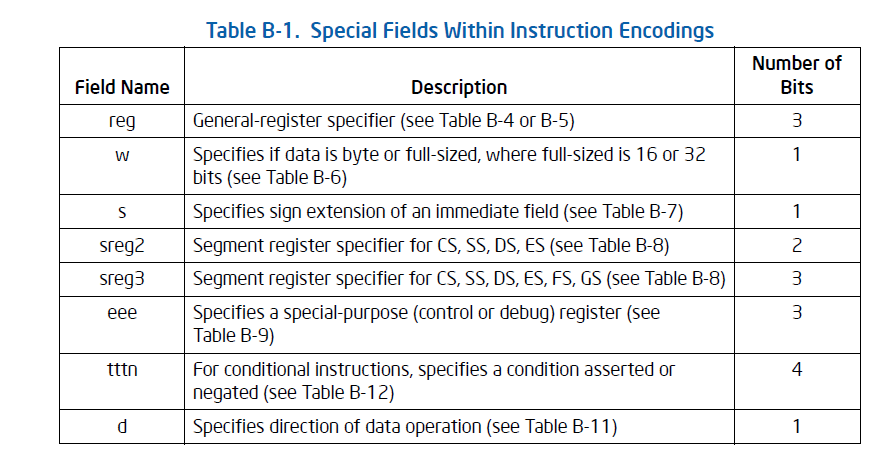

在 opcode 里也存在着不同的域，但是这些域定义显得很混乱并且格式不定。
以 89 和 88 opcode 为例，看看它们的 opcode 构成：
|
opcode = 89 opcode = 88
|
可以看出实际上 opcode.w 用来控制 operan size
|
1000 100 w
|
opcode 88 和 opcode 89 之间区别仅仅凭 opcode.w 来控制 operand size，因此 opcode 88 的操作数是 byte，opcode 89 的操作数是 16/32 位
和前面探讨有关 operand size 的话题一样， w = 1 时的 default operand size 是可以进行 operand size override 的。
看看 Intel 文档上的一个表格：

实际上用在 opcode 上的域有：
这些表格上的域并非每个 opcode 都有，这些域的存在大多情况下意味着指令有相同的寻址模式
opcode.reg 域是 3 位值，从 000 ~ 111 表示 eax ~ edi 共 7 个通用寄存器。
下的指令：
| inc ecx inc edx |
它们的编码是：
那么它们的 opcode 结构如图：
|
opcode = 41 opcode = 42 0100 0 001 0100 0 010 | | |
这类指令代表示整个 inc reg 指令家族，它们的 opcode 根据提供的 registers 编码码不同，范围是 40 ~ 47 ，事实上从 48 ~ 4F 是 dec reg 指令家族
值得一提的是：inc reg 和 dec reg 指令族在 64 位模式下，它变成了 REX prefix
当指令变为：
| inc rcx inc rdx |
它们使用的是 FF /0 和 FF /1 指令族，这种情况下 opcode 并不提供 reg 域，而是由 ModRM.r/m 来提供 registers 编码。
再来看一看另 2 条指令：
| mov cl, 0x01 mov ecx, 0x01 |
它们的编码是：
同样它们也是来自一个指令家族的。它们的操作是：MOV reg, immediate
但是它们的情况稍复杂一点，看一看它们的 opcode 结构：
|
opcode = b1 opcode = b9
| | | | |
这个指令族的 opcode 码有两个域：
也就是说这个指令族的 opcode 中的 operand size 和 register 都是可变的，因此这个指令族就产生了共 16 个 opcode 码
从 b0 ~ bf 都代表着这个指令家族，分别为：
当这 2 条指令变为：
| mov r9b, 0x01 mov r9, 0x01 |
很显然，它们需要 REX prefix 进行扩展寄存器，指令编码变为：
第 1 条指令的 REX prefix 与 opcode 结构图如下：
|
REX = 41 opcode = b1
| | |
这里 REX.W = 0 使用 default operand size，opcode.w = 0 也就是：byte
在 x86/x64 指令集中有为数不少因 operand size 和 operand directioon 不同而产生的指令对，如：
指令 |
操作数 |
操作数 |
ADD |
Eb, Gb 和 Ev, Gv |
Gb, Eb 和 Gv, Ev |
ADC |
Eb, Gb 和 Ev, Gv |
Gb, Eb 和 Gv, Ev |
AND |
Eb, Gb 和 Ev, Gv |
Gb, Eb 和 Gv, Ev |
XOR |
Eb, Gb 和 Ev, Gv |
Gb, Eb 和 Gv, Ev |
OR |
Eb, Gb 和 Ev, Gv |
Gb, Eb 和 Gv, Ev |
SBB |
Eb, Gb 和 Ev, Gv |
Gb, Eb 和 Gv, Ev |
SUB |
Eb, Gb 和 Ev, Gv |
Gb, Eb 和 Gv, Ev |
CMP |
Eb, Gb 和 Ev, Gv |
Gb, Eb 和 Gv, Ev |
MOV |
Eb, Gb 和 Ev, Gv |
Gb, Eb 和 Gv, Ev |
上面只是列举了一部分这类指令，每条这样的指令可以有 4 个变种，也就是这样的指令可以产生 4 个 opcode 码：
这样就会有 2 个 operand size 版本，和 2 个 operand direction 版本：
|
ADD 指令： 0000 00 d w |
上面是 ADD 指令其中的 4 个 opcode 的结构，那么它的 4 个版本是：
|
opcode = 00 opcode = 01
|
因此：opcode.d 的控制如下：
opcode.d |
frist operand（目标操作数） |
second opernad（源操作数） |
| = 0 |
memory 或 register |
register |
= 1 |
register |
memory 或 register |
这类指令是针对含有 immediate 操作数的计算类指令，如下指令：
add bl, 1 add ebx, byte 1 |
为了看到它们相应的 opcode 结果，第 2 条指令需要对 immediate 强制定为 byte 大小。它们的指令编码是：
对于这类指令的计算结果是需要确定是 signed 还是 unsigned 数，当是 singed 时会产生 signed-extended 行为
看看这对指令的 opcode 结构：
|
opcode = 80 opcode = 83
|
opcode 83 会产生一个 signed-extended 行为。
所以，从这里可以了解到指令的细节，当一条指令如下：
add ebx, 1 |
当编译为：
immediate 是 unsigned 数，它的大小为 32 位。
当编译为：
immediate 是 signed 数，它的大小为 8 位。
在 opcode 的 sreg 域里有 2 个版本：
Opcode.sreg2 只能表达 4 个 segment resiters
opcode.sreg2 |
寄存器 |
00 |
ES |
01 |
CS |
10 |
SS |
11 |
DS |
PUSH sreg 指令家族的 Opcode 结构：
|
PUSH sreg 家族：
|
POP sreg 指令家族 Opcode 结构：
|
POP sreg 家族：
注意：CS 寄存器不存在 POP sreg 家族内 |
x86/x64 指令集中不存在 POP CS 这条指令，CS 寄存器控制着整个 x86/x64 体系的指令分支流程和 privilege level，x86/x64 体系不允许直接通过 POP 来改变 CS，这是原因之一。其二是：0F 是 escape prefix 用来引导 opcode
下面 2 条指令：
push ds pop ds |
它们的编码是：
opcode.sreg3 有 3 位可以表达 8 个寄存器：
opcode.sreg3 |
寄存器 |
000 |
ES |
001 |
CS |
010 |
SS |
011 |
DS |
100 |
FS |
101 |
GS |
opcode.sreg3 使用在 PUSH/POP FS 和 GS 寄存器上，这 4 条指令的 opcode 是 2 bytes 的
|
PUSH FS/GS 指令：
|
opcode.tttn 为 x86/x64 指令集里的 CMOVcc，SETcc 以及 Jcc 指令家族提供条件码，opcode.tttn 条件码有 4 位，共表达 16 个条件码：
opcode.tttn |
rflags 标志位 |
cc 助记符 |
类型 |
描述 |
0000 |
OF = 1 |
O |
signed |
溢出 |
0001 |
OF = 0 |
NO |
没溢出 |
|
0010 |
CF = 1 |
C, B, NAE |
unsigned |
有进位，低于，不高于等于 |
0011 |
CF = 0 |
NC, NB, AE |
没进位，不低于，高于等于 |
|
0100 |
ZF = 1 |
Z, E |
为零，等于 |
|
0101 |
ZF = 0 |
NZ, NE |
不为零，不等于 |
|
0110 |
CF = 1 or ZF = 1 |
BE, NA |
低于等于，不高于 |
|
0111 |
CF = 0 and ZF = 0 |
NBE, A |
不低于等于，高于 |
|
1000 |
SF = 1 |
S |
signed |
符号位置位 |
1001 |
SF = 0 |
NS |
无符号位 |
|
1010 |
PF = 1 |
P, PE |
--- |
奇偶位置位 |
1011 |
PF = 0 |
NP, PO |
无奇偶位 |
|
1100 |
(SF xor OF) = 1 |
L, NGE |
signed |
小于，不大于等于 |
1101 |
(SF xor OF) = 0 |
NL, GE |
不小于，大小等于 |
|
1110 |
(SF xor OF) = 1 or ZF = 1 |
LE, NG |
小于等于，不大于 |
|
1111 |
(SF xor OF) = 0 and ZF = 0 |
NLE, G |
不小于等于，大于 |
有些 cc 助记符里可以有几中表示法，如：CMOVL 指令可以写为 CMOVNGE 每个条件码都是根据 rflags 寄存器里的相应的示志位
CMOVcc 指令族 opcode 从 0F 40 ~ 0F 4F，它们的 opcode 结构如下：
|
CMOVcc 指令族：
|
SETcc 指令族 opcode 从 0F 90 ~ 0F 9F，它们的 opcode 结构如下：
SETcc 指令族：
|
Jcc 指令族 opcode 从 0F 80 ~ 0F 8F，它们的 opcode 结构如下：
Jcc 指令族：
|